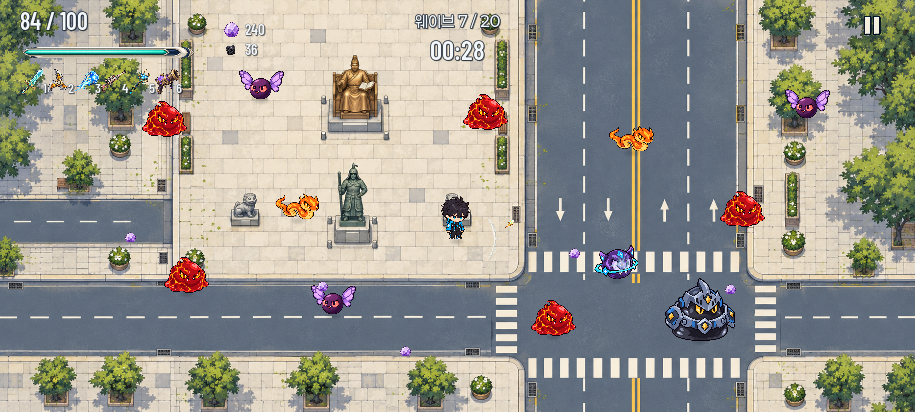
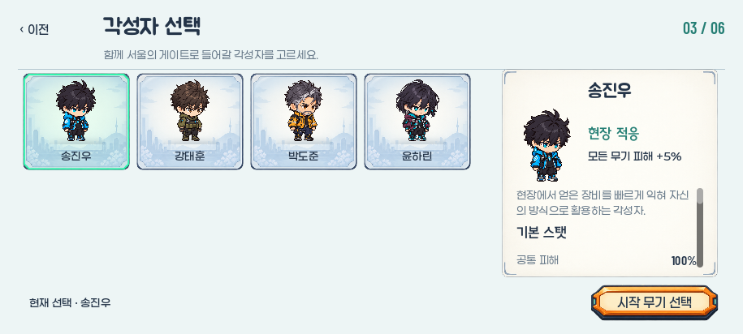
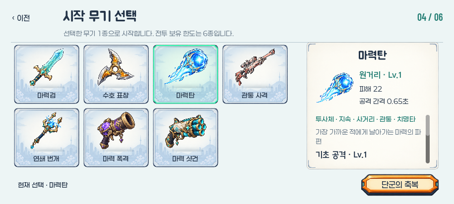
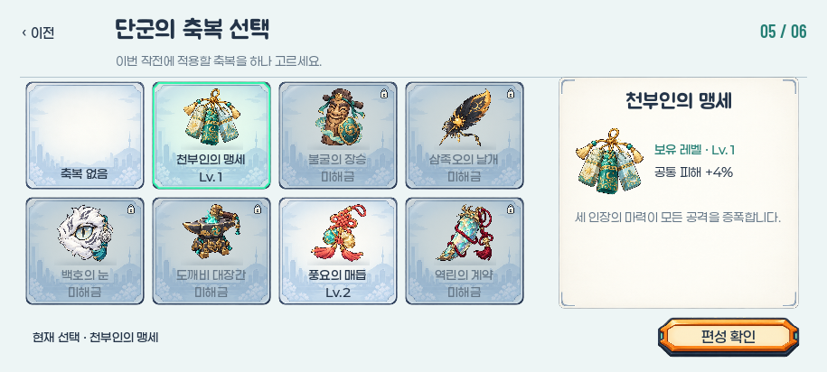
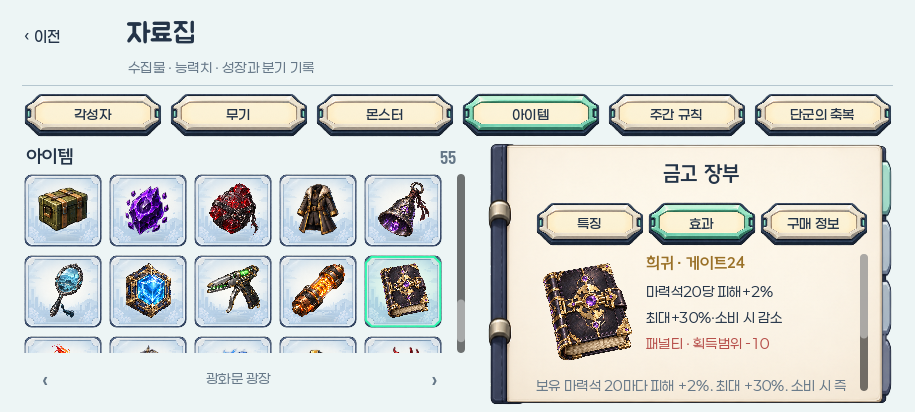
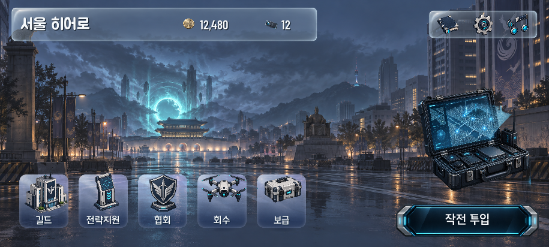
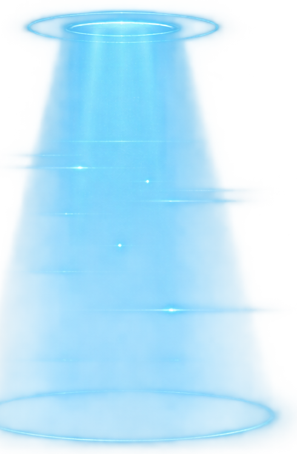
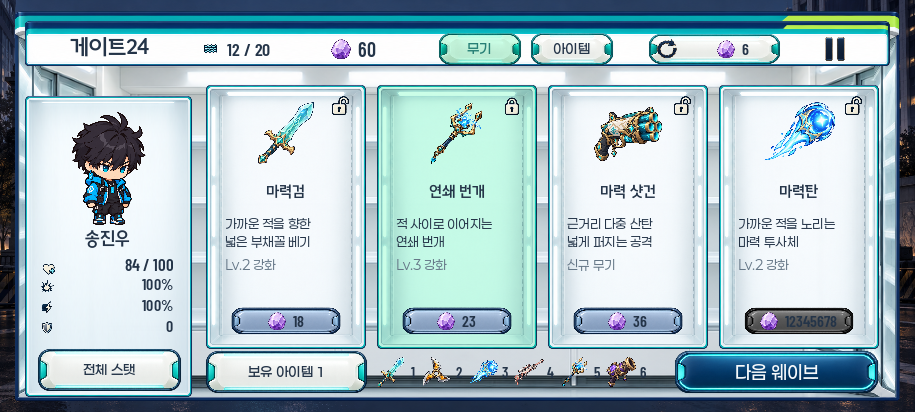
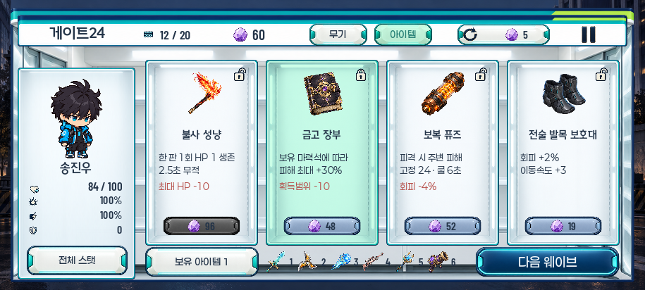

서울 히어로 · 3차 수정 시안 · 승인 대기
에나멜과 유리로 정리한 UI
현재 게임 화면을 바탕으로 정보판·유리 면·글꼴·출동 소품을 비교하는 독립 시안 8개입니다.
게임에 적용되지 않은 시안입니다. 프로필·저장·오디오·전투 실행과 분리되어 있습니다. 이번 3차 수정은 게임 소스를 변경하지 않습니다. UI 연결은 승인 후 진행하며, 앞선 2차의 공용 마력석 원화 갱신만 반영된 상태입니다.
독립 시안 8개 · 네이티브 문구 218개 · 필수 문구 배치 진단 0건 · 승인 대기
01
전투 HUD
체력·재화·미회수 지갑·무기를 한 행으로 모은 상자 없는 표시입니다.

915×412 · 01-hud.png · 승인 대기
02
각성자 선택
서울 배경을 고정한 선택 칸과 오른쪽 정보판의 재질·글꼴을 비교합니다.

915×412 · 02-character.png · 승인 대기
03
시작 무기 선택
무기 그림과 역할을 빠르게 읽도록 카드와 상세 면의 강조를 나눴습니다.

915×412 · 03-weapon.png · 승인 대기
04
단군의 축복 선택
동일한 선택 규칙 안에서 축복 원화와 보유 단계 정보를 확인합니다.

915×412 · 04-blessing.png · 승인 대기
05
자료집
썸네일과 책등 프레임은 살리고 읽기 면과 제목의 여백을 정리했습니다.

915×412 · 05-archive.png · 승인 대기
06
로비
오른쪽 유리 메뉴를 작은 책·톱니·음악 일러스트 아이콘으로 바꾸고 폭을 줄였습니다. 왼쪽 정보판·첩보 작전 단말·청록 스캔광·남색 출동 버튼은 유지합니다.


단말과 메뉴는 고정되어 있으며, 실제 투명 PNG 스캔광의 밝기만 2초 주기로 변합니다. 움직임 줄이기 설정에서는 약한 빛으로 고정합니다. 원본 PNG는 고정된 시작 위상입니다.
915×412 · 06-lobby.png · 승인 대기
07
게이트24 · 무기
4개 진열의 그림·짧은 설명·가격·오른쪽 위 잠금을 비교합니다. 구매면은 새 제작 PNG를 사용하며 활성·비활성 모두 동일한 원본을 유지합니다. 한 칸의 12,345,678 가격은 8자리 배치 확인용이며 실제 가격을 변경하지 않습니다.

915×412 · 07-shop-weapons.png · 승인 대기
08
게이트24 · 아이템
복합 효과와 패널티를 포함한 동일 높이 상품 진열입니다.

915×412 · 08-shop-items.png · 승인 대기